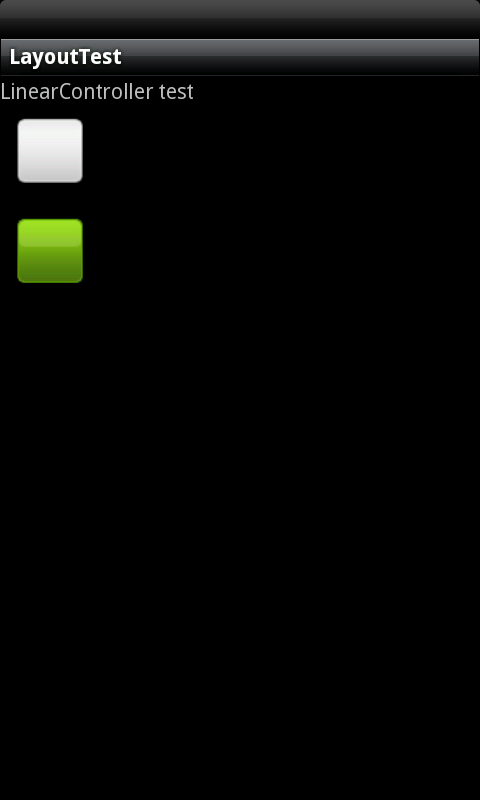
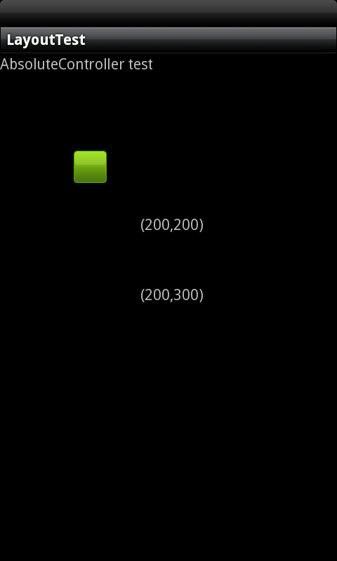
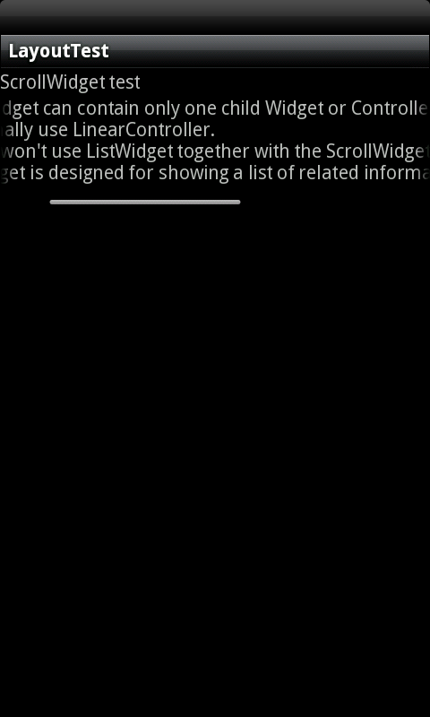

In our system we call layout as controller, one or more Widgets can be grouped together into a Controller. A Controller provides the layout in which you can order the appearance and sequence of widgets. In this tutorial, we provide an overview of the specific controllers such as FrameController, LinearController, etc. Available for organizing application screen content.
LinearController
The LinearController arranges widgets in a single column or single row. Child widgets can either be arranged vertically or horizontally.
AbsoluteController
The AbsoluteController lays widgets by specifying their exact X and Y positions.
ScrollWidget
A ScrollWidget is a special type of FrameController in that it allows users to scroll through a list of widgets that occupy more space than the physical display.
LinearController organizes widgets along a single line. You specify whether that line is verticle or horizontal using setOrientation(). Here is some sample code using LinearController.
LinearController* lc = new LinearController(this);
lc->setOrientation(LinearController::VERTICAL);
TextWidget* tv = new TextWidget(this);
tv->setText("LinearController test");
ImageWidget* im = new ImageWidget(this);
im->setImageResource(com::gaia::R::drawable::btn_square_overlay_normal);
ImageWidget* im2 = new ImageWidget(this);
im2->setImageResource(com::gaia::R::drawable::btn_square_overlay_selected);
LinearControllerParams* lcp = new LinearControllerParams(100,100);
lc->addWidget(tv);
lc->addWidget(im, lcp);
lc->addWidget(im2, lcp);

AbsoluteController lays widgets by specifying their exact X and Y positions. By default, if you define any widget in absolute layout without defining it’s x,y coordinates, it will be placed in the origin point at (x,y)=(0,0). If you define x,y values that are too large, the widget will not appear on the screen. Here is some sample code using AbsoluteController.
AbsoluteController* ac = new AbsoluteController(this);
AbsoluteControllerParams* acp1 = new AbsoluteControllerParams(ControllerParams::WRAP_CONTENT, ControllerParams::WRAP_CONTENT, 100, 100);
ImageWidget* imw = new ImageWidget(this);
imw->setImageResource(com::gaia::R::drawable::btn_square_overlay_selected);
ac->addWidget(imw, acp1);
AbsoluteControllerParams* acp2 = new AbsoluteControllerParams(ControllerParams::WRAP_CONTENT, ControllerParams::WRAP_CONTENT, 200, 200);
TextWidget* tv = new TextWidget(this);
tv->setText("(200,200)");
ac->addWidget(tv, acp2);
AbsoluteControllerParams* acp3 = new AbsoluteControllerParams(ControllerParams::WRAP_CONTENT, ControllerParams::WRAP_CONTENT, 200, 300);
TextWidget* tv2 = new TextWidget(this);
tv2->setText("(200,300)");
ac->addWidget(tv2, acp3);

The ScrollWidget can contain only one child Widget or Controller, we specify whether that orientation is verticle or horizontal when construct. We usually won't use ListWidget together with the ScrollWidget. The ListWidget is designed for showing a list of related information and is optimized for dealing with large lists. Here is some sample code using ScrollWidget.
TextWidget* tv = new TextWidget(this);
tv->setText("The ScrollWidget can contain only one child Widget or Controller,\n which normally use LinearController.\n We usually won't use ListWidget together with the ScrollWidget.\n The ListWidget is designed for showing a list of related information and is optimized for dealing with large lists.");
ScrollWidget* sw = new ScrollWidget(this, ScrollWidget::HORIZONTAL);
sw->addWidget(tv);
